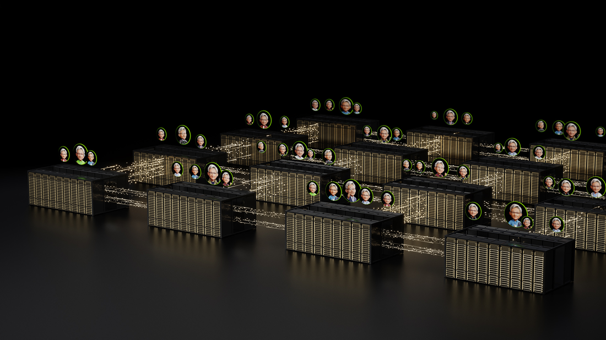
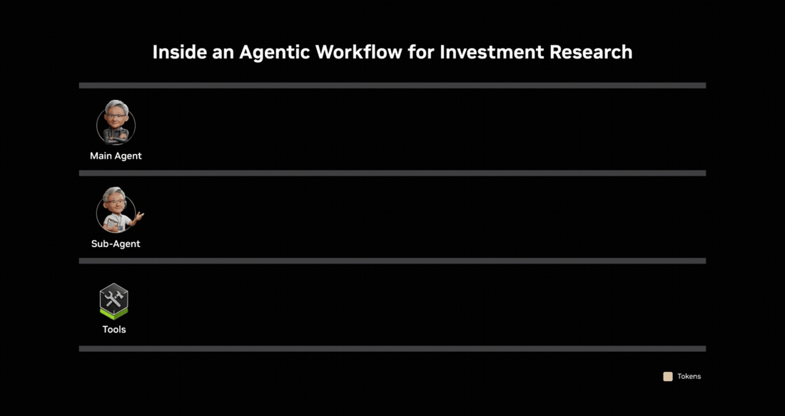
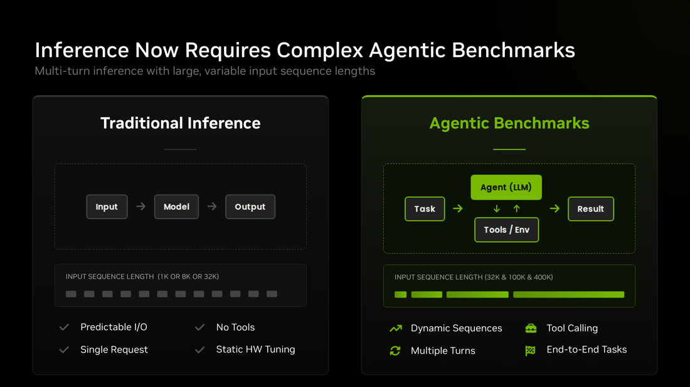
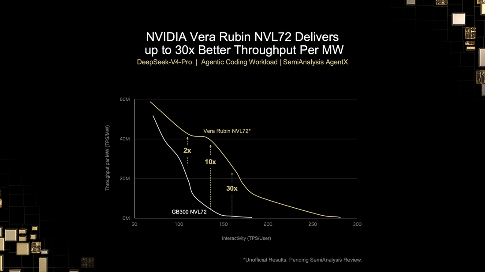

NVIDIA用真实agentic编码轨迹测得新性能数据：Vera Rubin NVL72系统在agentic负载上比GB300 NVL72每兆瓦吞吐高达30×、每百万token成本低35×。
OpenRouter数据显示agentic AI工作负载消耗的token量是简单chat请求的15×。原因：AI agent研究公司做投资决策时，查询金融数据库、搜索新闻和备案、调用sub-agent做同行比较和估值建模、然后合成成建议。Agent和sub-agent不断推理直到任务完成，驱动token需求增长。每一步累积的token成为下一步的输入，长上下文处理成为agentic AI性能的核心。

同一模式遍及每个agentic用例：从软件开发到客户服务到深度研究。随着agentic AI在产业进入生产，运行它的基础设施需要高效满足token需求。
新测得性能数据显示Vera Rubin NVL72在agentic负载上每兆瓦吞吐比GB300 NVL72高达30×。NVIDIA用SemiAnalysis AgentX工作负载（录制的真实世界agentic编码会话、保留实际上下文增长/tool calls/sub-agent生成）测量推理吞吐。对电力受限的AI工厂，直接意味着同能量足迹30× 更多agentic工作。
这些Vera Rubin NVL72早期结果展示NVIDIA加速创新步伐。持续软件优化下两平台性能都会继续提升。
Agentic工作负载与chat或文档摘要根本不同：后者输入输出序列通常1K到8K token。Agentic会话中上下文跨步骤累积、可达数十万输入token，输入输出长度跨请求宽变化。性能测量必须演进到捕捉完整agent工作流而非单个推理请求。

下面结果反映真实agentic编码轨迹上测得的性能。
在SemiAnalysis AgentX中，NVIDIA Blackwell平台在多个agentic模型（Kimi K3、MiniMax M3、GLM5.3、Qwen3.5、DeepSeek V4 Pro）上提供领先性能。
例如GB300 NVL72相对Hopper架构在DeepSeek V4 Pro模型上每兆瓦吞吐高至15×，给客户高性能基础跑agentic负载。这一跃迁反映更大scale-up GPU域和协同设计软件在推理效率上的优势。
Vera Rubin延伸这一优势，把整个Pareto曲线性能抬高，DeepSeek V4 Pro上每兆瓦吞吐比GB300 NVL72高至30×。这些早期结果（用AgentX工作负载测量、待SemiAnalysis审阅）尚不反映Vera CPU的tool calling性能。
NVIDIA DSX MaxLPS技术在GPU、rack、工作负载层面管理功率，在同样兆瓦预算内供给高达40% 更多GPU，在AI工厂规模进一步推高每兆瓦吞吐。
吞吐/兆瓦也直接影响每个产生token的成本。每百万token成本比GB300 NVL72低至35×，Vera Rubin NVL72可以持续、规模化、跨客户全工作量运行agents。
对电力受限的AI工厂：吞吐/兆瓦决定AI工厂营收、每百万token成本决定该营收的利润率。
现代推理优化覆盖一系列对agentic AI尤其关键的技术。Vera Rubin NVL72通过平台每一层的极致协同设计启用全部这些（及更多），产生多倍性能增益：


分离式serving把上下文处理（prefill）与响应生成（decode）分离、各自独立扩展；rate matching同步prefill GPU和decode GPU产生token的速度最大化效率；大规模专家并行把MoE模型的专家子网分布到scale-up GPU域；分布式KV-caching把内存扩展到scale-up GPU域，而KV-cache offloading把较少活跃上下文分层到host和存储，让已处理上下文无需重算即可访问；KV-aware routing把到来请求路由到已持相关缓存上下文的GPU、减少跨长会话的冗余计算；fused CUDA kernels（如MegaMoE）把众多计算和GPU间通信操作合并成单次执行、让GPU保持活跃而非等数据。
NVIDIA Rubin GPU增强的第五代Tensor Core和第三代Transformer Engine加速推理的prefill和decode阶段。NVFP4量化把模型权重压到4-bit精度，减少内存足迹、增吞吐而不牺牲输出质量。
NVL72 scale-up域（Vera Rubin和Grace Blackwell的定义架构）启用大规模专家并行和分布式KV-caching所需的高带宽低延迟GPU间通信。为此scale-up域打造的NVIDIA NVLink互联技术和NVLink Switch（现第六代）比现成Ethernet替代方案提供10× 更高包速率、3× 更低延迟。
覆盖优化CUDA kernels、TensorRT LLM推理运行时、Dynamo推理serving框架，NVIDIA软件栈与硬件协同设计、启用推理优化。
虽然上面结果反映当前Vera Rubin NVL72性能，完整平台是七芯片架构，还包括NVIDIA Vera CPU、Groq 3 LPU、NVLink 6 Switch、BlueField-4 DPU、Spectrum-6 SPX、ConnectX-9 SuperNIC：都为规模化部署agents的AI工厂打造。
极致协同设计也延伸到与伙伴的共工程。Vera Rubin已全面生产、正跨生态扩展。
参考：https://blogs.nvidia.com/blog/vera-rubin-nvl72-efficiency-ai-agents/